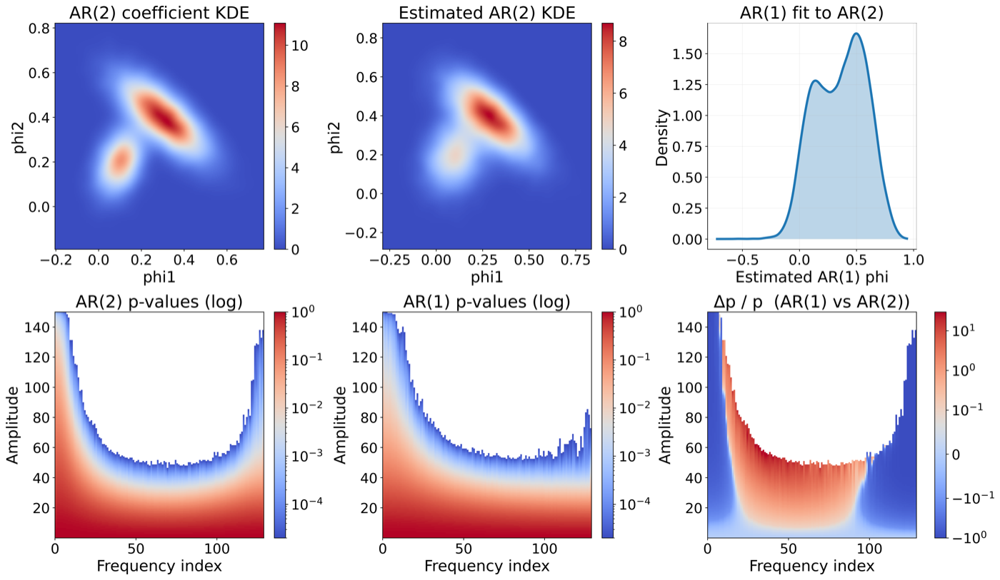
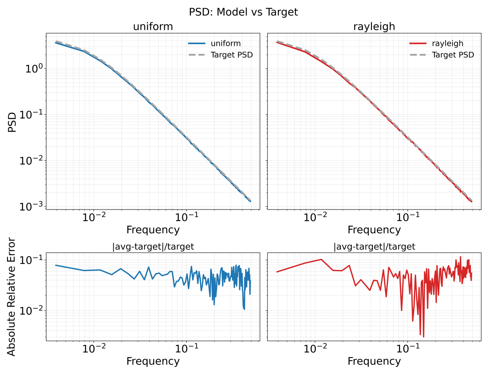
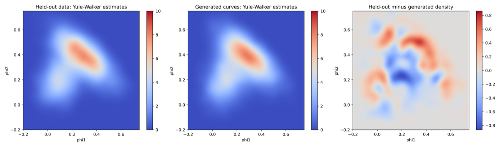
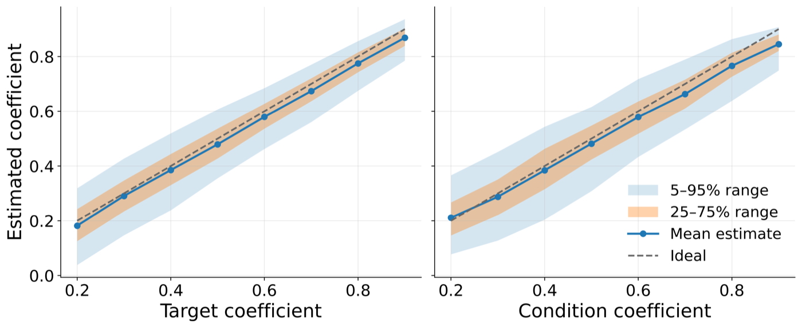
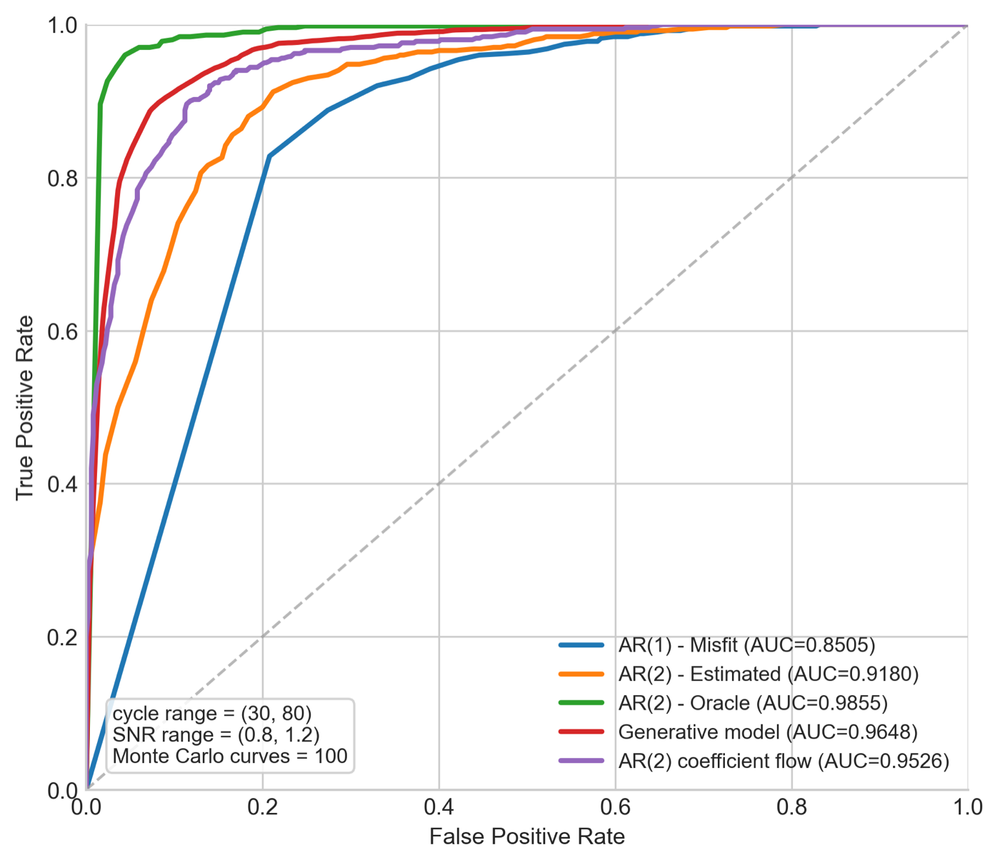
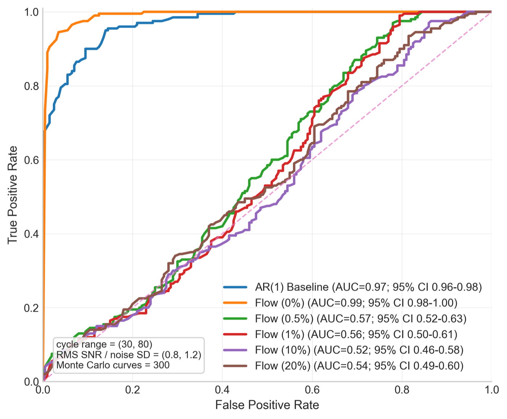
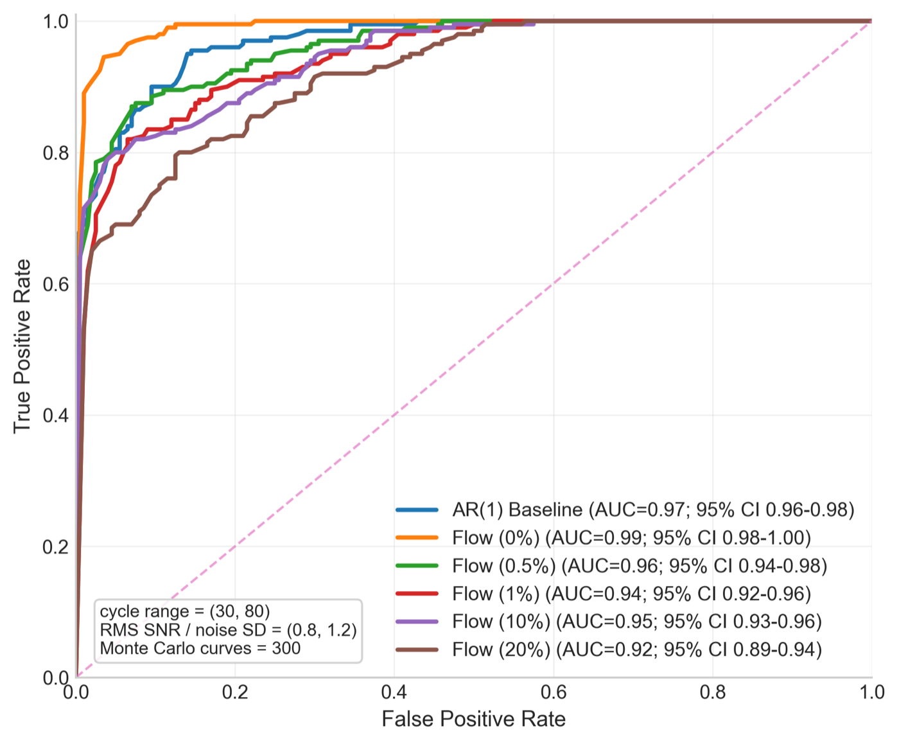

Moving Beyond the DRW Model: Learning Quasar Variability with Generative Models
All experiments use synthetic light curves with injected sinusoids; we do not analyze real quasars or claim a detection. Demos marked Illustration are simplified toys. Our results are in the figures marked From our paper and the AUC charts.
1. The problem: one blurry dot, two black holes?
At the center of most large galaxies sits a supermassive black hole, millions to billions of times the mass of the Sun. When it swallows gas it glows brighter than all the stars of its galaxy; we call it a quasar. When two galaxies merge, their black holes should sink to the middle and end up orbiting each other as a binary, only light-years apart, before eventually colliding.
Finding these binaries matters for understanding how galaxies and black holes grow, and for the gravitational waves they will emit. The difficulty is distance. These systems are billions of light-years away, and the two black holes are far too close together for any telescope to see them as separate. All we get is a single point of light.
What we can do is watch that point for years. Sky surveys (ZTF, CRTS, and soon the Rubin Observatory) record its brightness every few days, giving a light curve: one noisy 1-D time series per quasar. Assuming a binary's orbit would modulate the brightness periodically, which is the working assumption behind these searches and of our paper, the question becomes a signal-processing one:
Zoom out: from two black holes to a point of light Illustration
Left: one black hole. Right: two black holes orbiting each other. Under each, the brightness we would record. The curves are illustrative and build in the assumption that a binary produces a periodic signal: up close, the single one is steady and the binary pulses with its orbit. Fly away from them, and both shrink to the same point of light while noise piles into the signal, until it is hard to tell which curve is the periodic one. (Rendered live: light rays are bent around each black hole with an approximate general-relativity ray tracer. The disks and brightness curves are stylized.)
2. The catch: quasars are noisy by themselves
Even a lone black hole flickers. Its brightness drifts up and down at random, through processes in the accretion disk that are still not precisely understood. The standard description is the damped random walk (DRW). In ML terms it is an AR(1) process: each value is a fraction of the previous one plus fresh Gaussian noise,
xt = φ · xt−1 + εt
with φ close to 1 meaning long memory. This is "red noise": slow fluctuations carry most of the power. And slow random fluctuations look a lot like a few cycles of a sine wave. That is exactly the trap: a wobbly light curve is not, by itself, evidence of a binary, because pure noise wobbles too. It happens often enough that re-analyses with more careful noise models have cast doubt on many published candidates; one study found 33 candidates from one survey were statistically insignificant under a different null.
3. Null hypotheses, p-values, and the Monte Carlo test
For readers from ML, here is the whole statistical machinery, which will be familiar from anomaly detection:
- Null hypothesis H0: "this light curve contains only stochastic noise, with no periodic signal". That noise is described by a simulator we can sample from.
- Test statistic T: how "periodic" does the curve look? We take the highest peak of its periodogram (the power spectrum from the Fourier transform), which does not require knowing the period in advance.
- p-value: the probability that noise alone produces a peak at least this high. We estimate it by Monte Carlo: simulate N noise-only curves from the null, compute T for each, and count how many beat the observed one (p = (b + 1) / (N + 1)). A small p means "very unlikely to be noise", so it is flagged as a periodic candidate (and, under the assumption above, a possible binary).
Notice what this means: the answer is only as good as the noise simulator. The null hypothesis is a generative model, and it decides what counts as "normal". Try it below: the data stay the same, and you choose the noise model used for the test.
Try it: a Monte Carlo test with the wrong null Illustration
The real noise is an AR(2), with coefficients at one of the two clusters in our population. The wrong null is an AR(1), the standard damped-random-walk assumption. Even with its best parameter, it cannot reproduce the AR(2) spectrum, so it misjudges how often noise alone produces a strong peak. Compare it with the AR(2) null, or fit either model to the curve on screen.
4. Why one assumed model is not enough
We first make this concrete with a controlled experiment. We generate 8,000 light curves from a slightly richer process, an AR(2) (each value depends on the previous two), with coefficients drawn from a mixture of two clusters. Then we pretend not to know that and fit the usual AR(1) to each curve.
The AR(1) fit looks perfectly fine: its leftover residuals have lag-1 autocorrelation of about 0.02, well under the 0.12 you would expect from white noise at this length. Yet the p-values it produces are systematically wrong, and wrong differently at different frequencies: in the mid-frequency band the AR(1) null underestimates p by roughly an order of magnitude (false alarms), while at the lowest and highest frequencies it assigns plausible-looking p-values to amplitudes the true process essentially never produces (missed signals).

Two separate problems make hand-picked nulls fragile: (1) the model family may simply be wrong; (2) even with the right family, estimating its parameters from one short, noisy curve is unreliable, and flexible models such as AR(2) can oscillate, so the fit may quietly absorb the very signal we are looking for into the "noise", making the null too permissive.
5. The approach: learn the null from a population of quasars
One light curve cannot tell you its own noise model, but thousands of curves can. In our paper those curves are simulated, so we can check the learned null against the known truth. The idea of Nullasar is to learn the distribution over light curves directly from data, without ever writing down an AR or DRW formula, and then, given an observed curve, to generate fresh noise-only curves that look statistically like it.
- Generator. A continuous normalizing flow trained with flow matching. It learns a velocity field vθ(xt, t | z) that carries Gaussian noise to a light curve; at generation time we integrate it with 100 Euler steps. It is a 1-D U-Net with a self-attention block at the bottleneck, and it works on the Fourier coefficients of the curve (with the time-domain signal as extra input), because spectral structure is what matters here.
- Encoder. A network E(x) = z that compresses a light curve into a 128-D vector. Think of z as a learned replacement for hand-picked noise parameters such as (τ, σ) or (φ₁, φ₂): same role, but no fixed functional form. It conditions the generator through FiLM layers.
- A training trick. The curve we ask the generator to produce and the curve we feed the encoder are two different, non-overlapping segments of the same simulated light curve. So z cannot just memorize the exact curve; it has to capture the underlying process.
Try it: flow matching, from noise to a light curve Illustration
Training uses straight-line paths between a white-noise sample and a training light curve. The network learns the velocity that moves samples along such paths, so at generation time it can start from noise alone. (This shows the training path, not the trained network.)
To use Nullasar as a null, we feed the observed curve to the encoder, get z, generate N realizations, and plug them into exactly the same Monte Carlo test as before. Nothing in that pipeline assumes AR or DRW.
6. Does it actually learn the noise?
Show the sanity checks (three experiments and their figures)
Before using it for detection, we checked what the model really captures, on synthetic data where the truth is known.
- Beyond the power spectrum. We built two datasets with identical average power spectra but different distributions of Fourier amplitudes (Rayleigh vs. uniform). A model that only learned the spectrum could not tell them apart. Nullasar reproduces both, so it learns higher-order statistics.
- Population structure. Trained on AR(2) curves, its samples recover the correlated distribution of AR(2) coefficients, without being told the AR(2) form.
- Conditional generation. Given a single curve, it generates new curves whose estimated coefficients follow those of the conditioning curve, with accuracy comparable to fitting the correct model.



7. Results: detecting periodic signals
The test bed is entirely simulated: take synthetic noise-only curves, inject a sinusoid into half of them, and ask each null hypothesis to separate the two groups using the periodogram-peak statistic. Quality is measured by the AUC of the ROC curve (1.0 = perfect separation, 0.5 = coin flip). We compare against an oracle that knows the true coefficients, a fitted null that estimates them from each curve (what is typically done), and a mis-specified null with the wrong family.
Bar length shows AUC from 0.5 (chance) to 1.0. Synthetic data. The AR(2) Nullasar number is averaged over three independently trained models.
Reading the results. When the family is right and simple (AR(1)), Nullasar matches explicit parameter fitting: it can infer the relevant parameter from the curve. The interesting case is AR(2). Even with the correct family, the per-curve fit does worse, because AR(2) is expressive enough to explain part of the injected sinusoid as noise. We attribute Nullasar's advantage to the fact that it has seen the whole population of coefficients, which acts like a prior: coefficient values that are rare in the population are not favored just because they can soak up a periodic component. This is the same shrinkage effect as Bayesian estimation with an informative prior, but learned from data rather than specified.
How we tested the "learned prior" explanation
We tested that interpretation with an explicit ablation, an AR(2) coefficient flow: a small separate flow that outputs the posterior over (φ₁, φ₂) given a curve, weighted by how common each pair is in the population, from which we simulate AR(2) nulls. It lands close to Nullasar (0.953 vs 0.965) and well above per-curve fitting. This is consistent with the "learned prior" explanation; it is evidence for it, not a proof.

8. The catch: contaminated training data
A learned null has a weakness the parametric ones do not: it models whatever is in the training set. This matters for any future use on real catalogs, which may contain the very signals being searched for. If periodic curves sit in the training data, the model learns that they are normal.
We simulated this by injecting sinusoids into a growing fraction of the synthetic training curves. This experiment uses its own setup (AR(1) with φ from 0.2 to 0.9 and stronger signals, SNR 0.8–1.2, versus 0.5–0.8 in section 7), so its AUCs are higher and should not be compared directly with the AR(1) chart above. The effect is brutal. With clean data the AUC is 0.99 (versus 0.97 for the fitted AR(1) null). With just 0.5% contaminated curves, the smallest fraction we tested, it collapses to 0.57, and stays near chance at higher contamination.

Why it fails. Conditioned on a light curve that contains a periodic signal, the contaminated model is happy to generate signal-like "noise", because it has seen such curves in training. The observed signal no longer stands out against its own null, so p-values for true (injected) signals go up and detection power disappears. Simply cleaning the data is circular: finding the contaminated curves is the detection problem itself.
How much would this matter on real data? Our rough estimate suggests bright binaries are rare: a bright binary spends about 104 years in the relevant phase, versus a quasar lifetime of about 107 years, so roughly 0.1% of quasars. That is below the lowest contamination we tested, and whether such a low level hurts is still to be tested.
9. The PCA trick
The fix works at inference time, needs no retraining, and rests on one observation about the encoder's output z.
- Across the training population, z varies mostly along a few dominant directions: these describe how the noise process itself differs from quasar to quasar (the learned analogue of φ or τ).
- A periodic signal is rare in the training data, so it contributes little variance. Its imprint on z should live in the weak, low-variance directions.
So we run PCA on the encodings of the training set, keep only the top k directions (k = 6 here), and, at test time, replace the conditioning vector by its projection:
zproj = z̄ + Uk Uk⊤ (z − z̄)
The generator is faithful to its condition: it produces curves consistent with what the condition says. After projection, the condition describes only the noise process, so the model generates noise-only curves and the observed signal stands out again. Note that the model has not forgotten the contamination, and it can still generate signal-like curves; we just stop asking it to.
Try it: projecting away the signal imprint Illustration
A 2-D cartoon of the 128-D encoding space. Blue dots: encodings of the training curves, mostly spread along one dominant direction (dashed). The red dot is the encoding of an observed curve that contains a signal; the green ring is where it would sit without the signal. Because the signal's imprint lies almost entirely in the weak directions, projecting onto the dominant direction lands the condition almost exactly on the signal-free encoding, while keeping the noise-model information.
Thin gray bar: without projection. Blue bar: with the k = 6 projection. Fitted AR(1) baseline: 0.97. Bar length shows AUC from 0.5 to 1.0. Values from our ROC curves.
The projection leaves the clean model unharmed (AUC 0.99) and lifts the contaminated models from 0.52–0.57 to 0.92–0.96, close to the fitted AR(1) null. A mild decline with heavier contamination remains.

Choosing k: the PCA spectrum as a tool
In the paper we simply use k = 6. For new data, we suggest looking at the spectrum of the PCA, the variance of the encodings along each principal direction, as a practical diagnostic. A sharp drop is a natural place to cut: the strong directions before it should describe how the noise process varies, while the weak directions after it should hold most of the contamination, along with a small part of the noise variation.
Try it: choose k from the spectrum Illustration
Illustration, not our measured eigenvalues. The spectrum is made up to have the same structure. The lower curves show what the assumption above implies: most of the noise-process variation sits in the strong directions, a little of it remains in the weak ones, and the signal imprint sits almost entirely in the weak ones. Move k across the drop.
Too many directions keep the contamination in the condition; too few throw away genuine noise variation. The paper also proposes a direct procedure for when the right k is unknown: train a separate model on the same data with additional injected signals of known form, test how well those signals are detected for different values of k, and use the best value with the model trained without the injected signals.
10. Limitations and what comes next
- Synthetic data only. All experiments use simulated light curves with injected sinusoids, which lets us know the truth. Nullasar has not yet been validated on real quasars, which bring measurement errors, gaps and possibly non-sinusoidal signals.
- Uniform sampling. Real surveys sample unevenly (weather, seasons, scheduling). The framework should extend to this, for example by feeding time stamps to the model, but that is untested.
- Fixed length. The model generates T = 256 points, so it cannot capture variability slower than that window. Stitching together surveys (e.g. CRTS and ZTF) could give 20-year curves.
- Contamination at realistic levels, and multi-band data, are the next things to test.
Takeaways
- A null hypothesis is a generative model. Any "is this anomalous?" test inherits the biases of the simulator that defines normal. In our simulations, learning that simulator from data matched or beat fitting a hand-written one, including when the hand-written family was correct.
- Population-level training acts like a learned prior. It protects against per-example estimates that overfit, here a fit that absorbs the signal.
- Learned nulls are only as clean as their data, but a low-rank bottleneck on the conditioning vector can restore robustness without retraining.
Glossary
Show the glossary
- Light curve: brightness of one object over time.
- AR(1) / DRW: a noise model where each value depends on the previous one (DRW is its continuous-time version). AR(2) depends on two previous values.
- Periodogram: power of the signal at each frequency, from the Fourier transform.
- Null hypothesis / p-value: the "nothing interesting" explanation, and the probability it would produce data at least as extreme as observed.
- ROC / AUC: detection quality across all thresholds; AUC 1.0 is perfect, 0.5 is chance.
- Flow matching: training a network to predict the velocity that transports noise to data along simple paths.
Code, citation and acknowledgments
Nullasar is open source and can reproduce the data used in our paper: github.com/NadavSellamWork/Nullasar.
BibTeX
@article{sellam2026nullasar,
title = {Moving Beyond the DRW Model: Learning Quasar Variability with Generative Models},
author = {Sellam, Nadav Bojan and Park, Kevin and Bronstein, Alex and Haiman, Zolt{\'a}n},
year = {2026},
journal = {arXiv preprint arXiv:2611.15040},
eprint = {2611.15040},
archivePrefix = {arXiv},
primaryClass = {astro-ph.GA}
}
This research was supported by ERC grant Bright-BHBs (grant agreement no. 101200084). Views and opinions expressed are those of the authors only and do not necessarily reflect those of the European Union or the European Research Council Executive Agency.